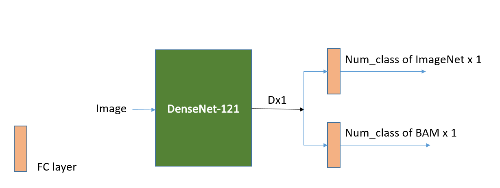

Introduction
Similarity Retrieval has been a hot topic in Computer Vision field for decades. Here we will focus on a non-trivial similarity retrieval, in which images are retrieved through a particular visual concepts based similarity rather than through a category-based similarity, as shown in Figure 0. Totally-Look-Like Dataset [1] is a new dataset first introduced in ACCV 2018 and this project will be evaluated based on Totally-Look-Like Dataset (TLL).
In this work, we first reimplement and adjust the TLL baseline. Then, we noticed that the baseline-like methods (using deep net feature directly) can retreve the category-based similarity well, which is sentitive to the between-class difference of training set but not sensitive in general visual concept based similarity that we are interested.
Thus, on top of the baseline-like method, we tried several ways to retrieve image similarity with respect to different visual concepts. With inspiration from both Conditional Similarity Network (CSN) [2] and Conditional Image-Text Embedding (CITE) [3], we train a neural network which can learn conditional embeddings by decomposing the original embeddings output from the deep net. Therefore, each conditional embedding could represent a different visual concept, from which we can later retrieve similarity. Besides to learn visual concepts via conditional embedding in a unsupervised way, we also discuss the potential to learn semantic concepts in a supervised way as what is introduced in Interpretable Basis Decomposition (IBD) [4]
Figure 0: Example of TLL [1]
Brief Literature Review
TLL
Totally-Look-Like Dataset [1] is a new dataset first introduced in ACCV 2018. The dataset contains visually similar pair-images, which are collected from a popular entertainment website. The proposed task of this dataset is image retrieval. each pair is divided into left and right set, such that one image goes to the left set and the other goes to the right. Given a query image from the left set, we want to find the most similar image from the right set or a subset of the right set. The proposed baseline method is to extract image features from the last activation layer from a deep net and use those features to compute cosine distance. The image retrieval is then considered as a latent space data point distance comparison problem.
CSN and CITE
Conditional Similarity Network (CSN) [2] and Conditional Image-Text Embedding Network(CITE) [3] are two work that train a neural network which can learn how to decompose a union concept.
CSN tries to retrieve image similarity based on different visual concepts (e.g., clothing categories, clothing occassion and clothing colors.) It trains several notion branchs in parallel and M mask such that each unit on a mask can behave like a gate to decide whether use a certain notion to retrieve concept m. Triplet are sampled based on every concept m to perform a well-defined supervised learning.
CITE tries to learn group text with similar semantic meaning in the latent space in an implicit way by conditional or concept embedding layers. Rather use predefined clusters (like clothing categories and etc in previous), CITE introduces a conditional branch to learn a weight vectors which behaves like a gate to decide how much each output of the conditional layers participate in the final prediction. Both the conditional layers and the weight branch can be learned during training.
IBD
Interpretable Basis Decomposition (IBD) [4] is a method proposed in ECCV 2018 to visualize the behaviors of neural network. It could decompose a prediction from a neural network in a form as the sum of comtribution of a set of base concepts. This is say, IBD provides a way to decompose a prediction into a set of basis vectors such that each base vector representing a basic visual concepts (objects, parts, color, textures, scenes, and etc). This is potential useful to us, if we want to decompose our embeddings and perform the retrieval based different visual concepts.
Dataset
Totally-Look-Like Dataset
The main dataset we used to evaluate our method. We are going to perform the image retrieval on the TLL dataset. TLL dataset contains 6,016 pairs of images, such that each images similar in a way based on general visual concepts rather than category-based similarity, as shown in Figure 0.
There are two cleaned subsets: no_duplicate subset and no_face subset. As the dataset is collected from a popular entertainment website, there are many duplicates among the 2x6,016 images which hurts the accuracy of retrieval results. Thus no_duplicates is a subset of the full TLL dataset with all duplicates removed, which has 1,828 images remaining. Meanwhile, as noticed there are a large poriton of faces images in the TLL dataset, another subset, called no_face subset, is provided as all faces and duplicates are removed, which resulted in 1,622 pairs remaining. More details about the subset selection process refers to Totally-Look-Like Dataset [1].
Since TLL dataset is relatively small, we use the entire TLL dataset to test our models only.
ILSRVC 2012 [8]
ILSRVC 2012 (ImageNet) is the version of ImageNet we used. In this project, if we say a "pre-trained" model, we means a model pre-trained on this dataset. ILSRVC 2012 has 1,000 classes and 1.2 millions images for training and 150,000 images for testing. In this project, when we joint training on top of the pre-trained models, we random selected images from the training set. We use a 50,000 validation set for evaluation.
The Behance Art Media Dataset (BAM) [5]
The Behance Art Media Dataset (BAM) [5] is art dataset built from Behance, a portfolio website of professional and commerical artist. Artwork in BAM includes painting, photography, graphic design, comic, oil plant, water color, and etc. As we noticed that there are many art work in TLL dataset, we choose BAM to finetune/joint-training/LwF [6] our ImageNet pre-trained models to get them familar with art features.
We only use the nine object labels (bicycle, bird, building, cars, cat, dog, flower, people and tree) in BAM. After preprocessing (random split with train:val:test=8:1:1), we have 60,353 images for training and 7,566 images for test for our experiments.
BroDen
BroDen [7] dataset is the dataset IBD used to train the base vectors of visual concepts. It has fine-grained (pixel or image level) labels for visual concepts fall in categories objects, parts, scenes, textures, colors and materials.
Retrieval Baseline
In this project, we choose DenseNet-121 [9], the model gives the best performance among the TLL's proposed baseline, as our backbone. We first implement TLL Baseline proposed in the original TLL Paper and then we add BAM dataset by fine-tuning, LwF, and joint training to improved the pre-trained DenseNet-121's recognition ability. There are two baselines provided by the original TLL paper as mentioned in pervious sections and we will introduce both of them in the following.
Before starting, the training error of all the models we trained is in Table 0. Also, we give a sample architecture figure of joint-training model. All other methods have very similar architecture.

Figure 1: Example Baseline Architecture. (joint training)
Method
ILSRVC2012 Before ILSRVC2012 After BAM Before
After
BAM From Scratch
N/A N/A N/A 25.88% | 1.81%
BAM fine-tuned from ILSRVC2012
25.53% | 8.03% N/A 83.28% | 36.34% 15.33% | 0.40%
BAM LwF from ILSRVC2012
25.53% | 8.03% 29.45%|10.03% 83.28% | 36.34% 13.30% | 0.28%
BAM joint-trained with ILSRVC2012
25.53% | 8.03% 31.64%|11.18% 83.28% | 36.34% 11.63% | 0.33%
Table 0: Error Rate (@1 | @5) of DenseNet-121 models we trained. Pytorch built-in DenseNet-121 were used for pre-trained models.
The qualitive result of joint training can be visualized at TLL Retrieval Demo for all the above models. (this one may requires log-in.)
General Recall Baseline
Say, we have N pairs of TLL images¬, we divide them into a left set and a right set, such that for every pair, one image goes the left set and the other one goes the right set. In this way, the left set (size N) and the right set (size N) have a one-to-one mapping. When we perform the similarity retrieve, we are given a query image selected from the left set we want to find the its correct paired image from the right set. If the correct image is the first retrieval result, we call it find it in top 1, and etc.
The original proposed method uses a deep neural net (ResNet or DenseNet) to extract features from input images by using the output of last activation layer. Then, for it computes the cosine distance for every possible pairs. The more similar two images are, the smaller the distance between their embedding is. Thus, for every query image, we will return a list of N images ordered by their distances from the query images (in the embedding space). If the ground truth paired image is found in the first to the k-th retrieval results, we call it “find in top k result”.
The original paper explores many deep neural net to extract the features and it turned out that DenseNet-121 will give the best result. Therefore, we will only reimplement this general recall by using DenseNet-121 and our following work will use DenseNet-121 as backbone too.
Here we report our self-implement retrieval based on DenseNet-121. For some reason, we couldn’t give the same result stated in the original paper. However, we decided not to spend too many time on it, because we believe our results make enough sense.
No-Duplicate Subset
Self-implemented Result on No_Dup Subset
Method
R@1 R@5 R@10
R@50 R@100
DenseNet-121 (Reported Baseline)
5.80% 13.84% 16.90% 29.92% 38.89%
DenseNet-121 (Self-Implemented Baseline)
5.25% 12.36% 15.92% 29.43% 37.42%
DenseNet-121 FromScratch
1.42% 4.27% 5.91% 13.18% 19.26%
DenseNet-121 Finetune
3.39% 8.64% 12.04% 24.34% 34.24%
DenseNet-121 LwF
5.69% 12.91% 16.63% 30.09% 38.51%
DenseNet-121 Joint Training
6.18% 13.46% 17.34% 30.58% 40.43%
Table 1: Baseline on TLL Retrieval with No_Duplicate Subset. Model from scratch are training on BAM. Others are training from ILSRVC 2012 to BAM.
No-Face Subset
After exploring the no-duplicate TLL subset, we realize there are more than 80% images are about faces. Since we are more interested in the general non-trivial similarity, we decide to use the no-face subset provided TLL. As there is no baseline reported in the original paper. Here we construct our own baseline.
Again, as realized TLL contains a large portion of cartoon images, we decide to leverage BAM, the art dataset, to help our model learn art features. Rather than use the original DenseNet-121 features to represent each images, we finetune/joint-training/LwF the pre-trained DenseNet-121 with BAM, and use the features output from the last activation layer of the new model to represent each images. We report the result below. Note, for comparison, we also report the retrieval results out of the original DenseNet-121 trained solely on ILSRVC2012 and BAM.
Method
R@1 R@5 R@10
R@50 R@100 R@500
DenseNet-121 (Baseline)
12.82% 25.65% 30.89% 45.38% 54.88% 79.49%
DenseNet-121 FromScratch
2.96% 8.14% 11.34% 22.75% 31.13% 64.67%
DenseNet-121 Finetune
6.72% 15.78% 20.22% 33.66% 42.73% 73.43%
DenseNet-121 LwF
12.70% 24.91% 29.34% 46.12% 55.49% 81.26%
DenseNet-121 Joint Training
12.89% 24.54% 30.27% 46.73% 54.25% 82.18%
Table 2: General Recall Baseline on TLL Retrieval with No_Face Subset. Model from scratch are training on BAM. Others are training from ILSRVC 2012 to BAM.
TODO
Give short explanation here
Associative Recall Baseline
Another evaluation protocol introduced in the original paper is associative recall. Rather than try to find the most similar image from the ENTIRE right set as general recall does, here we are only interested in finding the correct answer from five images which are reasonably selected from the entire right set. The correct answer will be guaranteed to be included in the five options and the other distractors are randomly selected from the top K results of the general recall. Notice here, if K=N, then the distractors are equivalent to random selected from the entire right set.
Here we report results on No_Face subset. In all below experiments, we selected distractors by ranking similarity from DenseNet-121 features distances (cosine).
Method
Top 5 Top 10 Top 20
Top 50 Top 100 top 200 top 500 All (Random)
DenseNet-121 (Baseline)
12.85% 16.85% 21.58% 28.55% 32.86% 38.84%
49.26%
66.03%
DenseNet-121 from Scratch
21.33% 25.22% 24.35% 27.68% 32.06% 34.09%
37.98%
47.35%
DenseNet-121 Fine-tune
19.17% 25.71% 26.63% 30.52% 34.40% 40.38%
46.36%
57.83%
DenseNet-121 LwF
13.81% 19.17% 22.38% 29.28% 35.45% 41.25%
51.48%
68.31%
DenseNet-121 Joint Training
16.34% 21.09% 24.48%
31.07% 35.94% 42.79%
51.48%
68.31%
Table 3: Associative Recall Baseline on TLL Retrieval with No_Face Subset. Model from scratch are training on BAM. Others are training from ILSRVC 2012 to BAM.
Note, here is a serious problem with associate recall when the distactor is not randomly selected from the entire dataset. As how associative recall is defined, if the distracted selected from top K similar images from the DenseNet-121 features, it is naturally hard for the models trained on top of DenseNet-121 to perform retrieval. Thus, the more different from DenseNet-121, the models are, the higher recall rate it can reach, when K is small. This is why the model trained from scratch of BAM give a very good recall number when K=5, but other models beat it when K gets larger.
Thus, it is reasonable to believe that only distractors randomly selected from the dataset(K=N) could give a fair evaluation of the performance of models. Thus, in the following we will only use associative recall with K=N (i.e., distractors are toally randomly selected).
K-Mean Baseline
TBD
In this project, we choose DenseNet-121 [9], the model gives the best performance among the TLL's proposed baseline, as our backbone. We first implement TLL Baseline proposed in the original TLL Paper and then we add BAM dataset by fine-tuning, LwF, and joint training to improved the pre-trained DenseNet-121's recognition ability. There are two baselines provided by the original TLL paper as mentioned in pervious sections and we will introduce both of them in the following.
Before starting, the training error of all the models we trained is in Table 0. Also, we give a sample architecture figure of joint-training model. All other methods have very similar architecture.
Figure 1: Example Baseline Architecture. (joint training)
| Method | ILSRVC2012 Before | ILSRVC2012 After | BAM Before | After |
|---|---|---|---|---|
| BAM From Scratch | N/A | N/A | N/A | 25.88% | 1.81% |
| BAM fine-tuned from ILSRVC2012 | 25.53% | 8.03% | N/A | 83.28% | 36.34% | 15.33% | 0.40% |
| BAM LwF from ILSRVC2012 | 25.53% | 8.03% | 29.45%|10.03% | 83.28% | 36.34% | 13.30% | 0.28% |
| BAM joint-trained with ILSRVC2012 | 25.53% | 8.03% | 31.64%|11.18% | 83.28% | 36.34% | 11.63% | 0.33% |
Table 0: Error Rate (@1 | @5) of DenseNet-121 models we trained. Pytorch built-in DenseNet-121 were used for pre-trained models.
The qualitive result of joint training can be visualized at TLL Retrieval Demo for all the above models. (this one may requires log-in.)
General Recall Baseline
Say, we have N pairs of TLL images¬, we divide them into a left set and a right set, such that for every pair, one image goes the left set and the other one goes the right set. In this way, the left set (size N) and the right set (size N) have a one-to-one mapping. When we perform the similarity retrieve, we are given a query image selected from the left set we want to find the its correct paired image from the right set. If the correct image is the first retrieval result, we call it find it in top 1, and etc.
The original proposed method uses a deep neural net (ResNet or DenseNet) to extract features from input images by using the output of last activation layer. Then, for it computes the cosine distance for every possible pairs. The more similar two images are, the smaller the distance between their embedding is. Thus, for every query image, we will return a list of N images ordered by their distances from the query images (in the embedding space). If the ground truth paired image is found in the first to the k-th retrieval results, we call it “find in top k result”.
The original paper explores many deep neural net to extract the features and it turned out that DenseNet-121 will give the best result. Therefore, we will only reimplement this general recall by using DenseNet-121 and our following work will use DenseNet-121 as backbone too.
Here we report our self-implement retrieval based on DenseNet-121. For some reason, we couldn’t give the same result stated in the original paper. However, we decided not to spend too many time on it, because we believe our results make enough sense.
No-Duplicate Subset
Self-implemented Result on No_Dup Subset| Method | R@1 | R@5 | R@10 | R@50 | R@100 |
|---|---|---|---|---|---|
| DenseNet-121 (Reported Baseline) | 5.80% | 13.84% | 16.90% | 29.92% | 38.89% |
| DenseNet-121 (Self-Implemented Baseline) | 5.25% | 12.36% | 15.92% | 29.43% | 37.42% |
| DenseNet-121 FromScratch | 1.42% | 4.27% | 5.91% | 13.18% | 19.26% |
| DenseNet-121 Finetune | 3.39% | 8.64% | 12.04% | 24.34% | 34.24% |
| DenseNet-121 LwF | 5.69% | 12.91% | 16.63% | 30.09% | 38.51% |
| DenseNet-121 Joint Training | 6.18% | 13.46% | 17.34% | 30.58% | 40.43% |
Table 1: Baseline on TLL Retrieval with No_Duplicate Subset. Model from scratch are training on BAM. Others are training from ILSRVC 2012 to BAM.
No-Face Subset
After exploring the no-duplicate TLL subset, we realize there are more than 80% images are about faces. Since we are more interested in the general non-trivial similarity, we decide to use the no-face subset provided TLL. As there is no baseline reported in the original paper. Here we construct our own baseline.
Again, as realized TLL contains a large portion of cartoon images, we decide to leverage BAM, the art dataset, to help our model learn art features. Rather than use the original DenseNet-121 features to represent each images, we finetune/joint-training/LwF the pre-trained DenseNet-121 with BAM, and use the features output from the last activation layer of the new model to represent each images. We report the result below. Note, for comparison, we also report the retrieval results out of the original DenseNet-121 trained solely on ILSRVC2012 and BAM.
| Method | R@1 | R@5 | R@10 | R@50 | R@100 | R@500 |
|---|---|---|---|---|---|---|
| DenseNet-121 (Baseline) | 12.82% | 25.65% | 30.89% | 45.38% | 54.88% | 79.49% |
| DenseNet-121 FromScratch | 2.96% | 8.14% | 11.34% | 22.75% | 31.13% | 64.67% |
| DenseNet-121 Finetune | 6.72% | 15.78% | 20.22% | 33.66% | 42.73% | 73.43% |
| DenseNet-121 LwF | 12.70% | 24.91% | 29.34% | 46.12% | 55.49% | 81.26% |
| DenseNet-121 Joint Training | 12.89% | 24.54% | 30.27% | 46.73% | 54.25% | 82.18% |
Table 2: General Recall Baseline on TLL Retrieval with No_Face Subset. Model from scratch are training on BAM. Others are training from ILSRVC 2012 to BAM.
Associative Recall Baseline
Another evaluation protocol introduced in the original paper is associative recall. Rather than try to find the most similar image from the ENTIRE right set as general recall does, here we are only interested in finding the correct answer from five images which are reasonably selected from the entire right set. The correct answer will be guaranteed to be included in the five options and the other distractors are randomly selected from the top K results of the general recall. Notice here, if K=N, then the distractors are equivalent to random selected from the entire right set.
Here we report results on No_Face subset. In all below experiments, we selected distractors by ranking similarity from DenseNet-121 features distances (cosine).
| Method | Top 5 | Top 10 | Top 20 | Top 50 | Top 100 | top 200 | top 500 | All (Random) |
|---|---|---|---|---|---|---|---|---|
| DenseNet-121 (Baseline) | 12.85% | 16.85% | 21.58% | 28.55% | 32.86% | 38.84% | 49.26% | 66.03% |
| DenseNet-121 from Scratch | 21.33% | 25.22% | 24.35% | 27.68% | 32.06% | 34.09% | 37.98% | 47.35% |
| DenseNet-121 Fine-tune | 19.17% | 25.71% | 26.63% | 30.52% | 34.40% | 40.38% | 46.36% | 57.83% |
| DenseNet-121 LwF | 13.81% | 19.17% | 22.38% | 29.28% | 35.45% | 41.25% | 51.48% | 68.31% |
| DenseNet-121 Joint Training | 16.34% | 21.09% | 24.48% | 31.07% | 35.94% | 42.79% | 51.48% | 68.31% |
Table 3: Associative Recall Baseline on TLL Retrieval with No_Face Subset. Model from scratch are training on BAM. Others are training from ILSRVC 2012 to BAM.
Note, here is a serious problem with associate recall when the distactor is not randomly selected from the entire dataset. As how associative recall is defined, if the distracted selected from top K similar images from the DenseNet-121 features, it is naturally hard for the models trained on top of DenseNet-121 to perform retrieval. Thus, the more different from DenseNet-121, the models are, the higher recall rate it can reach, when K is small. This is why the model trained from scratch of BAM give a very good recall number when K=5, but other models beat it when K gets larger.
Thus, it is reasonable to believe that only distractors randomly selected from the dataset(K=N) could give a fair evaluation of the performance of models. Thus, in the following we will only use associative recall with K=N (i.e., distractors are toally randomly selected).K-Mean Baseline
TBD
Retrieval Based on Condtional Concepts
From observation, we notice that the features extracted directly from deep neural net can represent a general sense of the image, so its retrieval would be performed only based on general sense emphasized on training dataset. For example, given a query image, that a girl wearing a rainbow clothing walking on a beach, it will return the pictures with girls walking on the beach, rather than images with rainbow. Although this retrieval still finds images with appreciable similarity, they are not as specialized to enable retrieve eimages based non-general criteria. Therefore, we want to find a way that enable us retrieve images with emphasis on different visual concepts, such as color, shape, ensemble faces, contour and etc.
We run a few round of trials to train deep nets, that are able to separate different visual concepts and retrieve images based on each concept.
Evaluation Metrics
Before we go through our trials, I am going to introduce how we combine the retrival results given from each concept branch and get the final recall (i.e., how to decide which branch (which concepts/which kind of similarity) to refer to for every image.)
Naive Combination (White box)
This evaluation will give us the upper bound of model performances. For every given image, if there are M conditional branch such that every branch learns a different visual concepts, we do M retrieval based on features extracted from the M branchs. If the true paired image is found at k-th retrieval results of any of branchs, we use the smallest k as the combined result. For example, if there are four branchs, and the restrieval results for image with index 2 are (i=2,k=1), (i=2,k=3), (i=2,k=5), and (i=2,k=801) respectively, the combined result would be k=1.
Auto Combination (Black box)
Since using ground truth to decide which branch to refer to for every image is kind of cheating, here we introduce an automatic way to decide which retrieval branch to follow. By this auto combination method, we will choose the branch that gives the smallest distances. Recall, we retrieve similarity based on the cosine distance of the embeddings of two images. Therefore, for every image and every branch, we will get a distance. Thus, the conbined result will be result out of the m-th branch if the m-branch gives the smallest embedding distances of the query image and the ground truth image.
Consider a top 1 retrieval result example. If there are four branchs, and the best retrieval results (result with smallest distance) for image with index 3 of each branch and their cosine distances are (i=1,d=0.4), (i=2,d=0.5),(i=3,d=0.02) and (i=801,d=0.003) respectively, the combined result would be i=2, (which means that the top 1 retrieval is wrong.)
First Trial: Conditioning by training separated models
First, we train two separate models to represent different concepts. The first model is DenseNet-121 joint training with ILSRVC 2012 BAM to represent general features. The second models is DenseNet-121 joint training with ILSRVC 2012, BAM, Gaussian blurred ILSRVC 2012 and Gaussian blurred BAM to represent the shape/color/more abstract general sense of image.
Then we found that the embedding from the blurred DenseNet does respond to different visual concepts especially in sense of contour. This may be caused the blur makes there less fine-grained details in the image, so the contour and shape was emphasized and learnt better.
| Method | R@1 | R@5 | R@10 | R@50 | R@100 | R@500 |
|---|---|---|---|---|---|---|
| DenseNet-121 (Baseline) | 12.82% | 25.65% | 30.89% | 45.38% | 54.88% | 79.49% |
| DenseNet-121 Joint Training | 12.89% | 24.54% | 30.27% | 46.73% | 54.25% | 82.18% |
| DenseNet-121 Joint Training (with Blur) | 11.28% | 21.51% | 26.57% | 43.96% | 54.25% | 82.18% |
| DenseNet-121 Naive Combined | 16.21% | 29.84% | 35.88% | 53.45% | 63.50% | 88.84% |
Table 4: General Recall of conditional method 1. (Blurred).

Figure 2: Left column is the query image and its ground truth pair. Middle column is ordered retrieval results given by joint training model. Right column is the retrieval result ordered retrieval results given the blurred joint training result. From the Top 2 examples, it shows that the blurred model perform better when the similarity is infering from the images as whole. And the bottom two examples show that the the non-blurred model works better when the similarity has more emphasis on the details (e.g. textures).
Second Trial: Conditioning from Conditional Network
Inspired by CITE and CSN, we tried to train a conditional neural network, in a hope that the neural net can learn how to decompose the raw embedding out of DenseNet-121 into several conditional embedding with weights assigned to each condtional embedding itself. We hope each embedding could learn a different visual concept, which we can perform retrieval based on.
Recall, our goal is to train the embedding encoded by different conditional branch could representing different concepts. Thus, though we train our neural net by performing two tasks classification and similarity triple comparison, the only thing we want is the embedding output from each conditional branch. The reason why we have to train the neural net by performing other tasks rather than similarity retrieval itself is, the TLL dataset is not large enough for us to train such a network. Thus, t is not realistic to train it explicitly like what is done in Conditional Similarity Network. Thus, we designed our network following the idea of CITE (a weight branch and a branch for conditional branchs), as shown in Figure 4 and 5.
Training by Classification Task
Alternatively, the first training we tried is to perform a classification task. We use proposed network to joint-train data from ILSRVC 2012 and BAM and to enable the conditional layers to learn different concepts. Model is shown in Figure 3. Here we report experiment result by setting # of conditional branch M = 4. quantatitive result is below. The qualitive result can be visualized at TLL Retrieval Demo.
Figure 4: Network Architecture of Condtional Retrieval Training on Classification Task.
| Method | R@1 | R@5 | R@10 | R@50 | R@100 | R@500 | Associative Recall | |
|---|---|---|---|---|---|---|---|---|
| DenseNet-121 (Baseline) | 12.82% | 25.65% | 30.89% | 45.38% | 54.88% | 79.49% | 66.03% | |
| DenseNet-121 Joint Training | 12.89% | 24.54% | 30.27% | 46.73% | 54.25% | 82.18% | 68.31% | |
| Conditional M=4 (classification) - Naive Combination | 14.30% | 28.00% | 34.90% | 52.22% | 61.41% | 87.73% | 76.33% | |
| Conditional M=4 (classification) - Auto Combination | 11.28% | 21.64% | 28.00% | 46.30% | 54.87% | 81.63% | 69.36% | |
| Conditional M=4 (classification) - Shared | 12.95% | 24.91% | 30.58% | 47.78% | 56.84% | 82.57% | 68.13% | |
| Conditional M=4 (classification) - Dot Product | 11.10% | 21.76% | 27.68% | 45.01% | 54.93% | 81.63% | 68.68% |
From the quantatitive result, we can see the proposed method can give slightly better result by both using the conditional embeddings (rows 3 and 4 in table 5) or just use the shared or producted embedding output by the neural net itself (rows 5 and 6 in table 5).
Training by Similarity Triplet
As the original Conditional Similarity Network and CITE are trained as similarity network and triplet are used there. We want to train our proposed network with similarity triplet to see whether it could improve the performance. We adjust our architecture as shown in Figure 5.
In our experiment, we use BAM and ILSRVC dataset. For each dataset, we sample triplet as (query image, random image from the same category, and random image from another category). We report the experiment results with M=4. Same as earlier, the quantatitive result is below and the qualitive result can be visualized at TLL Retrieval Demo.
Figure 5:Network Architecture of Condtional Retrieval Training on Similarity Task. Note the architecture are shared by the triplet.
| Method | R@1 | R@5 | R@10 | R@50 | R@100 | R@500 | Associative Recall | |
|---|---|---|---|---|---|---|---|---|
| DenseNet-121 (Baseline) | 12.82% | 25.65% | 30.89% | 45.38% | 54.88% | 79.49% | 66.03% | |
| DenseNet-121 Joint Training | 12.89% | 24.54% | 30.27% | 46.73% | 54.25% | 82.18% | 68.31% | |
| Conditional M=4 (classification) - Naive Combination | 14.30% | 28.00% | 34.90% | 52.22% | 61.41% | 87.73% | 76.33% | |
| Conditional M=4 (classification) - Auto Combination | 11.28% | 21.64% | 28.00% | 46.30% | 54.87% | 81.63% | 69.36% | |
| Conditional M=4 (similarity triplet) - Naive Combination | 7.64% | 16.21% | 20.10% | 34.03% | 43.83% | 74.86% | 60.67% | |
| Conditional M=4 (similarity triplet) - Auto Combination | 6.41% | 13.01% | 16.46% | 28.00% | 36.25% | 66.58% | 52.03% |
Apparently, the proposed network trained on similarity triplet task is not as good as trained with classification task. This could be caused by the way how the triplet is simpled. The sampling way enforces the network to learn the between-class differences, so the network will be more sensitive to within-class similarity. However, the kind of simiarlity in TLL that we want to detect is not in-class similarity but a concept-based, more abstract and general similarity, which could be a reason of the failure.
Overall, from the qualitive result, we can see the conditional branchs are not learning separated concepts and they behave very similar. Thus, we want to find a way to train the proposed network to learn separated concepts, which is what next section is about.
Third Trial: Adjustment with Network to Learn More Independent Concepts
By observing the qualitative result from the previous experiments, we realize that the concept that each conditional learned are not separated. If you consider them as vector bases, they are not perpendicular. However, we want them to be as independent as possible, so that we can leverage their separation and combination of them to help us find more customized simlarity. Therefore, in this section, we are going to explore how we can train each branch more independent.
Before everything, we first adjust our proposed network a bit to enable it deal with more complexity. Basically, we add several more fully-connected layers and we normalize the learned embeddings of the conditional layers as we will abstractize them as "base vectors" from now. As tested, training with classification task would fit better to our task, we will train with classification task for this round of experiments as well. The new proposed NN architecture is shown in Figure 6.
Figure 6: New Conditional Network Architecture.
More Conditional Branchs (Larger M)
In the previous experiments, the number of conditional branchs was kept as four. However, it could be very difficult to completely decompose a complex 1024x1 embedding into 4 conditional branch. This is to say, each of the four conditional embeddings can still be a combination of many basic visual concepts, which makes four of them gives similarly retrieval results. Thus, here we are going to try different M, and report the results of M=4,16,64.
Perpendicular Loss
Another way we tried to enforce each of the M conditional branch to learn different concepts is adding an additional loss which punishes the non-perpendicular conditional pairs as ||a \dot b || for every conditional component pair a and b. The running time of this loss grows expoentially, so the training is slow. Also, this makes it very hard to train while keep the ILSRVC2012's accuracy, my best case, which is reported below, is top1 error rate around 60%.
Here we report the results of the methods proposed in this seciton.
| Method | R@1 | R@5 | R@10 | R@50 | R@100 | R@500 |
|---|---|---|---|---|---|---|
| DenseNet-121 (Baseline) | 12.82% | 25.65% | 30.89% | 45.38% | 54.88% | 79.49% |
| DenseNet-121 Joint Training | 12.89% | 24.54% | 30.27% | 46.73% | 54.25% | 82.18% |
| Conditional M=4 (classification) - Naive Combination | 14.30% | 28.00% | 34.90% | 52.22% | 61.41% | 87.73% |
| Conditional M=16 (classification) - Naive Combination | 21.21% | 38.16% | 44.94% | 64.98% | 74.78% | 96.48% |
| Conditional M=64 (classification) - Naive Combination | 28.79% | 47.72% | 53.82% | 75.89% | 84.09% | 98.80% |
| Conditional M=4 Perpendicular (classification) - Naive Combination | 12.08% | 22.81% | 28.11% | 44.76% | 55.12% | 84.77% |
| Method | R@1 | R@5 | R@10 | R@50 | R@100 | R@500 |
|---|---|---|---|---|---|---|
| DenseNet-121 (Baseline) | 12.82% | 25.65% | 30.89% | 45.38% | 54.88% | 79.49% |
| DenseNet-121 Joint Training | 12.89% | 24.54% | 30.27% | 46.73% | 54.25% | 82.18% |
| Conditional M=4 (classification) - Auto Combination | 11.28% | 21.64% | 28.00% | 46.30% | 54.87% | 81.63% |
| Conditional M=16 (classification) - Auto Combination | 8.32% | 18.56% | 22.01% | 35.14% | 44.08% | 73.55% |
| Conditional M=64 (classification) - Auto Combination | 6.17% | 15.60% | 20.47% | 36.87% | 44.51% | 73.92% |
| Conditional M=4 Perpendicular (classification) - Auto Combination | 9.43% | 16.15% | 20.10% | 32.61% | 40.38% | 68.93% |
The qualitive result can be visualized at TLL Retrieval Demo for all the above models.
Here, we introduce a new metrics to evaluate how separate the conditional branchs are. Known the more similar two conditional branchs are, they will give more similar embeddings and thus the more overlap will be with their retrieval result. Thus, we use the following formula to measure the overlap of the retrieval results, which can indicate how different each pairs of conditional branch are. The Average Overlap is defined as sum_i(# overlaps over retrieval results out of ALL conditional branchs in top K results)/N, where N is the dataset size.
| Method | top 5 | top 10 | top 20 | top 50 | top 100 | top 500 |
|---|---|---|---|---|---|---|
| Conditional M=4 (classification) | 2.6 | 5.4 | 11.26 | 29.25 | 60.78 | 343.36 |
| Conditional M=16 (classification) | 1.48 | 3.19 | 6.76 | 17.87 | 38.49 | 256.04 |
| Conditional M=64 (classification) | 0.19 | 0.34 | 0.65 | 1.61 | 3.52 | 32.14 |
| Conditional M=4 Perpendicular (classification) | 1.01 | 2.2 | 4.74 | 13.27 | 29.25 | 210.05 |
From the above results, we can see:
- None of the methods proposed in this section beat the baseline;
- the more conditional branchs there are, the neural network will learn more separated concepts, but also more difficult to decide which branch to refer to when output the final retrieval results; and
- the perpendicular loss has ptential to force each branch to learn separated concepts (as the average overlap halfed after adding perpendicular loss). However, it is very hard to train it achieve the same accuracy as without this loss, which is also the reason why the retrieval recall is not as high as the other method. (During the training, the classification accuracy converges around 40% for ImageNet and 90% for BAM.) It may give better and promising result if we can find an appropriate way to train it. However, the time complexity is still a pain.
Discussion
TLL Dataset
Our initial goal is to get a better performance on the TLL retrieval. However, with exploring the TLL dataset, we realize that there are some dataset issues which could make the task hard. Though the duplicates are supposed to be removed, there are still some duplicates remaining in the cleaned subset which could hurt the accuracy. Also, even without the duplicates, there could be more than one image similar to a query image by human judgement, but there is only one groundtruth. Plus, this dataset is too small to be used as training set in many cases, so we have to face the dataset bias problem.
Potential Solution for This TLL Retrieval
As we exploring how to train a neural network to learn separated visual concepts from a single image, we found the embedding semantic decomposition is very interesting. Inspired by the IBD paper, IBD could potential not only be applied to nerual network visualization but also other tasks like this image retrievals. We could compute embedding projections on the concepts that we are interested, find the similarity based on the selected concepts. In this way, we can get a concept-specialized similarity score. Besides, we can also use the low level concepts from BroDen to train the concept branchs as what has been done in the CSN work.
Potential Topic Shift
The topic of Interpretable Basis Decomposition itself or just the semantic decomposition in latent space seems very interesting and not well explored yet. There are still many interesting questions with IBD, such as the independences of the visual concepts conponents, the large residuals of the decomposition or the representing ability of visual concepts conponent encoding. Besides, the semantic decompostion in latent spaces might have more application than just visualization. It may be generalized to image synthesis, multi-task training or any multiple concepts involved task?
References
[1] Rosenfeld, Amir, Markus D. Solbach, and John K. Tsotsos. "Totally Looks Like-How Humans Compare, Compared to Machines." arXiv preprint arXiv:1803.01485 (2018).
[2] Veit, Andreas, Serge J. Belongie, and Theofanis Karaletsos. "Conditional Similarity Networks." In CVPR, vol. 1, no. 2, p. 3. 2017.
[3] Plummer, Bryan A., Paige Kordas, M. Hadi Kiapour, Shuai Zheng, Robinson Piramuthu, and Svetlana Lazebnik. "Conditional Image-Text Embedding Networks." arXiv preprint arXiv:1711.08389 (2017).
[4] Zhou, Bolei, Yiyou Sun, David Bau, and Antonio Torralba. "Interpretable basis decomposition for visual explanation." In Proceedings of the European Conference on Computer Vision (ECCV), pp. 119-134. 2018.
[5] Wilber, Michael J., Chen Fang, Hailin Jin, Aaron Hertzmann, John Collomosse, and Serge J. Belongie. "BAM! The Behance Artistic Media Dataset for Recognition Beyond Photography." In ICCV, pp. 1211-1220. 2017.
[6] Li, Zhizhong, and Derek Hoiem. "Learning without forgetting." IEEE Transactions on Pattern Analysis and Machine Intelligence 40, no. 12 (2018): 2935-2947.
[7] Bau, David, Bolei Zhou, Aditya Khosla, Aude Oliva, and Antonio Torralba. "Network dissection: Quantifying interpretability of deep visual representations." arXiv preprint arXiv:1704.05796 (2017).
[8] Russakovsky, Olga, Jia Deng, Hao Su, Jonathan Krause, Sanjeev Satheesh, Sean Ma, Zhiheng Huang et al. "Imagenet large scale visual recognition challenge." International Journal of Computer Vision 115, no. 3 (2015): 211-252.
[9]Huang, Gao, Zhuang Liu, Laurens Van Der Maaten, and Kilian Q. Weinberger. "Densely connected convolutional networks." In CVPR, vol. 1, no. 2, p. 3. 2017.